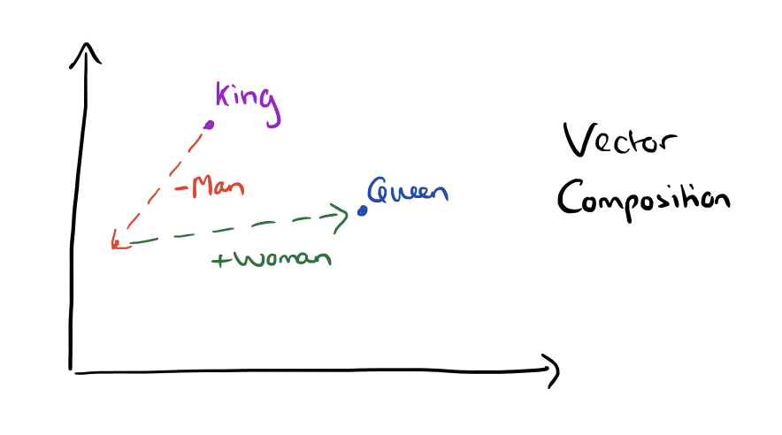

Emoji2Vec
Emoji2Vec is a Tensorflow model that can evaluate the correlation between a phrase and an emoji. The concept behind it is mapping emoji descriptions to a 300-dimensional word2vec embeddings. You can train the model with your own word vectors but the codes are outdated by 3 years. So, I won't get into the details on the updates you can change to make it work and suggest that you use the pre-trained model here.
Word2Vec

Word2Vec is a two layer neural-network that are trained to give meaning to a word. Word2Vec takes a large corpus of text and produces a vector space, typically 300 dimensions. The words are placed into the vector space and the words that are near one-another have some sort of relationship between them.
There are two algorithms that use neural networks to learn these relationships: Continuous Bag-of-Words (CBOW) and Continuous Skip-grams.
A continuous Bag-of-Words model is a two-layer neural network that:
- takes the surrounding "context words" as an input.
- generates the "focus word" as the output.
A Continuous Skip-gram model is a two-layer neural network that:
- takes the "focus word" as an input.
- generates the surrounding "context words" as the output.
To use Emoji2Vec, here's a few step you have to do:
# Import KeyedVectors
from gensim.models import KeyedVectors
# Specify binary=False if you downloaded the emoji2vec.txt file
e2v = KeyedVectors.load_word2vec_format('emoji2vec.bin', binary=True)
We can use Emoji2Vec the same way we use a Word2Vec since it is built on top of it. Below are some ways we can use the Emoji2Vec.
Find the most similar emoji specified in the positive parameter. You can also add topn parameter to find more/less similar emojis
# 😀 + 😏 - 🐻
e2v.most_similar(positive=['😀','😏'], negative=['🐻'])
[('😄', 0.7684105634689331),
('😊', 0.7594529390335083),
('😃', 0.7001644372940063),
('☺️', 0.6823519468307495),
('😆', 0.6771583557128906),
('😁', 0.5827614068984985),
('😙', 0.5478200912475586),
('😼', 0.5350919961929321),
('😺', 0.5226963758468628),
('😸', 0.5138327479362488)]
Find which emoji that doesn't match the rest of the emoji.
e2v.doesnt_match(['👹','😄','🌚'])
'😄'
Find which emoji that is available in the pre-trained model and how many emojis available.
print(f"There are {len(e2v.vocab)} emojis in the pre-trained model")
# Select 10 emojis from the pre-trained model
list(e2v.vocab.keys())[:10]
There are 1661 emojis in the pre-trained model
['🇸🇰', '👔', '🌀', '🚾', '👹', '🚻', '👬', '🇫🇯', '🎧', '🐽']
Get emojis that are closer to emoji_1 than emoji_2 is to emoji_1.
e2v.words_closer_than("🇨🇦","🇧🇷")
['🇮🇩',
'🇨🇺',
'🇵🇭',
'🇵🇪',
'🇦🇸',
'🇸🇪',
'🇸🇬',
'🇿🇼',
'🇷🇸',
'🇬🇷',
'🇪🇹',
'🇧🇪',
'🇨🇴',
'🇬🇪']
Get the vector of a particular emoji
e2v.get_vector("🇨🇦")
array([-0.08153377, -0.00512645, 0.05092463, 0.07315395, -0.07158525,
-0.07614303, 0.05440971, -0.07221644, 0.04563996, 0.06579534,
-0.06911545, -0.0719159 , 0.04860694, -0.05321891, -0.07122429,
0.0654095 , -0.02263111, 0.06741014, -0.07329754, -0.07739025,
-0.06395316, 0.08242127, -0.06954571, -0.07447409, -0.06900528,
0.01934627, -0.08564401, 0.07838529, 0.05827915, 0.0216393 ,
0.07411529, -0.01086878, -0.06682646, 0.01186315, 0.02620483,
0.02106263, -0.02962501, 0.07107932, 0.07333881, -0.05374338,
0.03890424, 0.05913771, 0.06444998, -0.0266115 , -0.04512472,
-0.06835517, -0.06118051, 0.0659039 , -0.03324051, 0.07164478,
-0.06542061, 0.07060651, -0.04774935, 0.06328726, -0.06480551,
0.01566281, -0.08166915, -0.08284004, -0.0601818 , -0.05688748,
-0.07254388, 0.03321197, -0.08360758, -0.05805186, -0.06377023,
-0.07512479, -0.07526702, -0.0121171 , -0.07506793, 0.05593664,
-0.01790641, 0.06412722, -0.02238822, -0.08169718, -0.0422078 ,
-0.07355917, 0.08094319, -0.03506543, 0.06417479, 0.07060524,
-0.06305612, 0.01102446, -0.04554191, -0.07317493, -0.04419043,
-0.03100159, -0.06581827, -0.08174152, -0.04884722, -0.00369057,
0.07905251, -0.01575356, -0.02393303, -0.06603606, 0.0362473 ,
0.07867329, 0.04721723, -0.05937321, 0.05610027, 0.0166523 ,
0.06873678, -0.05882998, 0.05191163, -0.06564375, -0.04861433,
0.06548851, -0.04804644, -0.06680167, 0.05577104, 0.03244819,
-0.08007582, -0.03377501, -0.05221476, 0.03029248, 0.07223584,
0.06894179, 0.05835119, -0.04750014, 0.07837258, 0.06225735,
-0.01952654, -0.06063814, -0.07004292, 0.03431779, 0.02664417,
0.01096206, -0.00823669, 0.03153222, 0.0692677 , 0.07749068,
0.0631955 , -0.06804961, -0.06186319, -0.05004102, 0.05516666,
0.00912401, -0.06352545, -0.05090697, 0.07056139, -0.03086233,
0.06725696, -0.06845909, 0.05321219, 0.01603308, 0.05978904,
-0.06765656, 0.04989646, -0.06305835, -0.07863815, -0.06508031,
0.06277879, 0.07337014, -0.06363788, -0.03344782, -0.05870591,
-0.04550726, 0.03675425, 0.0547008 , -0.05752914, -0.06054003,
0.0388172 , 0.07419887, 0.05726679, -0.03262638, 0.05368554,
-0.04292994, 0.05072724, -0.07803544, -0.06829201, 0.05805666,
-0.06871984, -0.05597311, -0.06504852, -0.0765515 , -0.03387519,
-0.02783372, 0.08599485, -0.08542097, 0.08099722, -0.07878012,
-0.07980496, -0.07884905, -0.08077793, 0.04428504, -0.0079814 ,
0.02623136, -0.06583171, -0.00901688, 0.06491411, 0.08103057,
0.05043236, -0.01161618, -0.05633109, -0.04426887, -0.06209848,
0.03568539, -0.05737614, -0.07362378, -0.05603002, -0.07032084,
-0.08095992, 0.07650756, -0.06203517, -0.06330303, -0.05828199,
0.04350803, 0.03968759, 0.03594178, 0.0070648 , 0.02815073,
-0.0549473 , 0.07413195, -0.07728325, 0.07743621, -0.02340375,
0.01260078, 0.06930837, -0.05284047, -0.06343789, -0.0328899 ,
0.06917925, -0.05813731, 0.05910756, -0.04570911, -0.04933043,
-0.0581139 , 0.04621762, 0.07486493, 0.05009038, 0.00409312,
-0.05213471, -0.07411943, 0.06063467, 0.0388049 , -0.06848522,
-0.06180341, 0.06829309, -0.0493894 , 0.08481105, -0.04127007,
0.01583592, 0.03773865, 0.00178657, -0.04710871, 0.01538769,
0.04198352, -0.06562931, 0.04805617, -0.04287365, -0.00350778,
0.06973681, 0.06454927, 0.06176369, 0.04682367, -0.07303634,
-0.05130278, 0.02936709, 0.08390128, 0.07005267, -0.03992929,
0.07313218, 0.06366605, -0.01900339, -0.06287906, 0.06447707,
0.06728256, -0.04663906, 0.06100817, -0.05949601, -0.06092597,
-0.01862367, 0.00076876, 0.05694811, -0.07012664, 0.06520902,
-0.04728891, -0.07373948, -0.07144023, -0.06368902, 0.06148839,
0.01864787, -0.05356473, 0.06330353, 0.05580815, -0.05124222,
0.06799551, -0.06379522, 0.0778928 , 0.06177828, -0.02277394,
-0.06238573, 0.06489652, 0.04634358, 0.04530136, 0.06611436,
0.01611616, -0.05732575, -0.05423624, 0.00838663, 0.01447754],
dtype=float32)